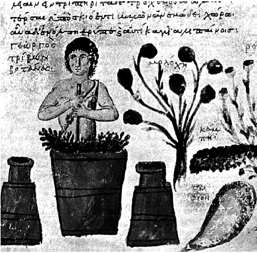

ŞEKİL 20. Nikandros’un Thêriaka - Alexipharmaka‘sından, tiryakın hazırlanması;
11. yüzyıl (Bibliothèque Nationale de France, Paris).45
Avrupa’da Sözde-Geber’e ve Sözde-Mesuë’ye yakıştırılan 13. yüzyıla ait “grabadin”ler (< Ar. “mürekkebât” / “akrabadin”: karışım ilaç listesi, farmakope) önem taşımaktadır. “Sözde-Geber” (“Pseudo-Geber”) olarak bilinen Tarentum’lu Paulus’a yakıştırılan eser, hem Arapların bu konuya ilişkin bilgilerini hem de geç 13. yüzyıl Batı dünyasının kimya bilgilerini içerir. Sözde-Mesuë (ya da Genç Mesuë) tarafından Kuzey İtalya’da derlenen “grabadin” ise yüz yıl boyu ilaç hazırlama konusunda temel eser olmuş ve Avrupa’nın her eczanesinde kullanılmıştır.34
Çoğu manastırda şifalı bitkilerin saklandığı odalar vardı ve bunlar Latince “apotheca” diye adlandırılıyordu. Bu nedenle Almanca’da eczane karşılığı kullanılan “Apotheke” sözcüğü, özgün olarak, manastır hekimlerinin şifalı ot odası anlamındadır. “Eczacı” sözcüğünün, Batı’da ilk olarak 1180 yılında Montpellier’deki eczacı yemininde “apothecayres” şeklinde yer aldığı görülmektedir. Bölgesel eczacı yemin ve unvanları Marsilya’da 1231, Avignon’da 1242, Arles’de 1245, Melfi’de 1251, Venedik’te 1258 yılından itibaren görülmektedir. Eczacı loncaları da aynı dönemde oluşmuşlardır.34
Avignon’daki papalık merkezinin (Roma’daki papalık merkezi, çeşitli nedenlerden ötürü 1309-1377 yılları arasında Avignon’da faaliyet göstermişti) ünlü cerrahı Guy de Chauliac (1300-1368) burada yetişmiş ve yazdığı Chirurgia magna (Büyük Cerrahi) (1363) adlı kitabı ile “cerrahinin babası” olarak tanınmıştır. Chauliac, hıyarcıklı vebayı, incir ve fıstıklı yakılarla tedavi etmeye çalışmıştır. Ortaçağda temiz şarabın, mikroplara karşı iyi geldiğine ve alkolün bulaşıcı hastalıklardan koruduğuna inanılırdı (ŞEKİL 21).